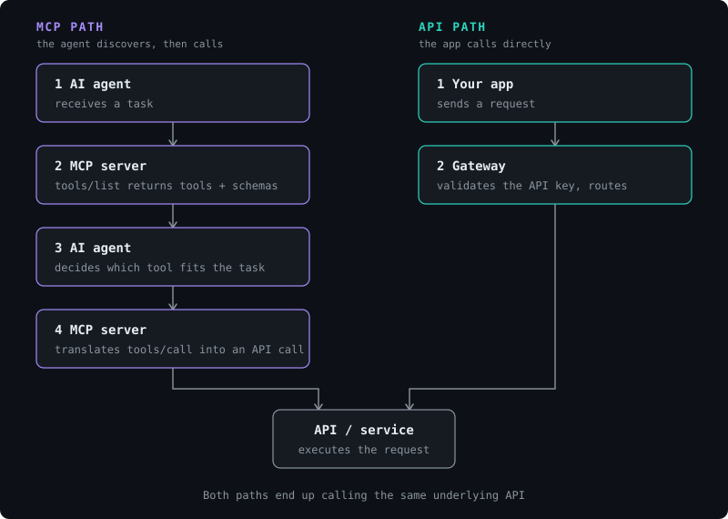

If you scroll through tech LinkedIn or X long enough, you'll eventually see a post claiming that the Model Context Protocol (MCP) "replaces the API," or that it's a sort of new backend paradigm. As engineers, it's worth being clear about what's really going on under the hood, because the two are solving different problems at different layers of the stack, and mixing them leads to bad architectural decisions.
MCP does not replace your API, because behind every MCP server there is still a regular API being called. What MCP changes is how a model discovers and decides which endpoint to call, and not what the endpoint does or how it's implemented.

1. What MCP actually is
Originally released by Anthropic, MCP is an open protocol built on top of JSON-RPC 2.0. It defines a client-server relationship between an AI application (the host, e.g. Claude, an IDE, a custom agent) and an MCP server that exposes a set of capabilities: tools (functions the model can call), resources (data the model can read), and prompts (reusable templates).
The low-level reality
An MCP server doesn't introduce new backend logic. Its purpose is to describe, in a machine-readable format, what's available and how to use it, so that an agent can reason about which capability to invoke for a given task, without a developer having to hard-code that mapping.
A basic tool description might look something like this:
{
"name": "get_weather",
"description": "Returns current weather for a given city",
"inputSchema": {
"type": "object",
"properties": {
"city": { "type": "string" }
},
"required": ["city"]
}
}When the agent decides to use it, the host sends a JSON-RPC call such as:
{
"jsonrpc": "2.0",
"id": 1,
"method": "tools/call",
"params": {
"name": "get_weather",
"arguments": { "city": "Lisbon" }
}
}The MCP server receives that call, translates it into the format expected by the underlying system (a REST request, a SQL query or a CLI command), executes it, and returns the result in a standard JSON-RPC response. From the model's perspective, every capability looks the same: a named tool with a schema. From the server's perspective, it's still just calling the same endpoints your app already uses.
Transport-wise, MCP servers typically communicate over stdio (for local processes) or Streamable HTTP (for remote servers), which matters for how you deploy and secure them: a local stdio server inherits the host process's permissions, whereas a remote HTTP server needs its own authentication mechanism.
2. MCP vs. API is the wrong comparison
This is the recurring confusion, so it's worth breaking down explicitly, side by side.
The traditional API path
- Your app sends a request.
- A gateway validates the API key and routes it.
- A service executes the query and returns data.
- Your app updates the UI with the result.
The MCP path
- An agent receives a task.
- It asks the MCP server what tools are available (
tools/list). - The server returns the list of tools with their schemas.
- The agent decides which tool fits the task.
- The MCP server translates that decision into a call against the underlying API.
Steps 2 and 3 of the API path (the gateway and the service) are exactly what step 5 of the MCP path calls. What MCP adds is a discovery and reasoning layer in front of it, providing a standard way for a model to identify what's callable and how, instead of a developer wiring a bespoke function-calling schema for every tool, for every agent framework, by hand.
| Traditional API | MCP | |
|---|---|---|
| Caller | Application code | An LLM-based agent |
| Discovery | Documentation / OpenAPI spec, read by a human | tools/list, read at runtime by the model |
| Contract | Fixed at development time | Negotiated at session time |
| Auth | API keys, OAuth, per-service | Handled per MCP server, can wrap API keys, OAuth, etc. |
| What it replaces | Nothing. It's the interface itself | Custom function-calling glue code per agent/tool pair |
That last row is the actual value proposition: if you've ever written a wrapper manually so that an agent framework could call a specific endpoint, and then had to rewrite an equivalent wrapper for a different framework, MCP is the layer that removes that duplication a not the API layer beneath it.
3. Engineering trade-offs
Viewing MCP as nothing more than metadata added to an API fails to capture the architectural trade-offs a Tech Lead must account for:
- Tool discovery cost : a naive integration calls
tools/liston every session start. With several MCP servers connected, that's several round trips before the agent can even reason about the task, adding latency you don't see in a direct API call. - Schema quality is the interface : the model selects a tool based purely on its name, description, and input schema. A vague description ("does stuff with data") leads directly to wrong tool selection; this is prompt engineering applied to an API contract, and it demands the same level of precision as writing a good OpenAPI spec.
- Expanded security surface : an MCP server sitting in front of an API can bundle several backend permissions behind one set of credentials. Scoping what each tool is allowed to do (and auditing what the agent actually called) becomes as important as the authorization layer of the API itself.
- No behavior guarantee : MCP standardizes how a tool is described and invoked, not what it does internally. Idempotency, rate limits, and error handling are still entirely up to the underlying API.
Conclusion
MCP is neither a new backend nor an alternative to the API. It's a standardized discovery-and-invocation layer that sits between a model and the systems you already have, replacing the need for custom-built function-calling integrations. Once you understand it that way, the key question stops being "MCP or API?" and becomes "which of my existing APIs are worth describing to an agent, and how well?"
If you want to explore the topic further, the official MCP documentation is the best starting point for building a server or a client from scratch.